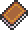

Crystal Storm
| Crystal Storm | |
|---|---|
| | |
| Statistics | |
| Type | Weapon |
| Damage | 26 |
| Knockback | 5 |
| Max stack | 1 |
| Mana | 5 |
| Shoot speed | 16 |
| Rarity | 4 |
| Use time | 6 (Insanely Fast) |
| Tooltip | Summons rapid fire crystal shards |
| Sell | 10 |
The Crystal Storm is a magic weapon. It rapidly fires small magical crystals that bounce off solid surfaces, losing velocity as they travel. It suffers from poor accuracy at long ranges, but the shots can be bounced around corners which can make it quite useful in tunnels.
It is created at a Bookcase using a Spell Tome, Crystal Shards and Souls of Light.
Crafting
Recipe
| Crafting Station | ||
|---|---|---|
| Ingredient(s) | Amount | |
|  | Spell Tome | 1 |
| Crystal Shard | 30 | |
| Soul of Light | 20 | |
| Result | ||
| Crystal Storm | 1 | |
Trivia
- Crystal Storm seems to be the Hallowed counterpart of the Corruption's Cursed Flames.
- Like arrows, the Crystal Storm projectiles move slower while you are in water. In contrast they do not speed up upon exiting water, leading to a much shorter range.
Tips
The Crystal Storm spell is very useful against large groups of enemies, because of the sheer number of crystals it fires, as well as its piercing tendency. Use it during a Blood Moon, or in the Dungeon for maximum effect.
Its piercing quality makes it effective against the Wall of Flesh and The Destroyer. It also has a respectable damage output for fighting The Twins as well. It could be considered a "poor man's Megashark", though since there are more buffs that boost magic damage than ranged damage, the actual output can be quite similar.
With the proper weapon status, such as Deadly, which increases both damage and firing speed, this weapon can actually match or best other late game weapons such as the Megashark. This is due to its already massive firing rate, for which a 14% increase to goes a long way.
Note: The projectiles don't actually have a piercing quality like Meteor Shot or the Space Gun, but the projectiles inaccuracy at long ranges mixed with its ability to bounce infinitely gives it a pseudo-piercing effect.
History
- 1.1: Introduced.